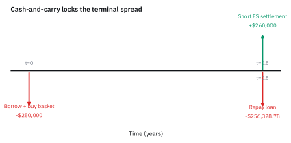

19.1 Cost of Carry and Cash-and-Carry Arbitrage
ราคาล่วงหน้าไม่ได้มาจากการเดาว่าของจะแพงขึ้นเท่าไร แต่มาจากต้นทุนของการซื้อของวันนี้แล้วถือไว้จนถึงวันส่งมอบ
ดัชนี S&P 500 อยู่ที่ 5,000 จุด สัญญา ES ที่หมดอายุในอีก 6 เดือนเสนอขายที่ 5,200 จุด สัญญาละ \$50 ต่อจุด โต๊ะของคุณกู้เงินได้ 5% ต่อปีแบบทบต้นต่อเนื่อง เพื่อนร่วมโต๊ะบอกว่า “futures แพงกว่าดัชนี 200 จุด ซื้อหุ้นทั้งตะกร้าแล้วขาย ES ไว้ ได้ \$10,000 ต่อสัญญาแน่นอน” ล็อกได้จริงเท่าไร? (หน้านี้สมมติว่าหุ้นในดัชนีไม่จ่ายปันผล ขั้นที่ 7 และ 19.4 เติมกลับเข้ามา)
ลองตอบก่อนเปิดเฉลย
ได้ \$3,671.22 ต่อสัญญา ไม่ใช่ \$10,000 เงิน \$250,000 ที่กู้มาซื้อหุ้นโตเป็นหนี้ \$256,328.78 ในหกเดือน ส่วนต่างที่ล็อกได้จริงจึงเหลือ 73.42 จุด ไม่ใช่ 200 จุด ถ้าโต๊ะกู้ได้จริงที่ 6% จะเหลือ \$2,386.37 และเมื่อหักค่าซื้อขายที่ประเมินไว้ \$900 เหลือ \$1,486.37 ทุกตัวเลขรู้ตั้งแต่วันนี้ ไม่ว่าดัชนีจะจบที่เท่าไร
สิ่งที่เราจะสร้าง
18.1 สอนว่าเงินคนละวันเอามาลบกันตรง ๆ ไม่ได้ และ 18.9 เทียบการซื้อตะกร้าหุ้นกับ ETF ที่ห่อตะกร้านั้นไว้ หน้านี้ใช้เหตุผลเดียวกันกับสัญญาที่ส่งมอบวันหน้า: ถ้ามีสองทางที่จบด้วยของชิ้นเดียวกันในวันเดียวกัน ต้นทุนของสองทางต้องเท่ากัน ไม่อย่างนั้นมีคนเก็บส่วนต่างได้ฟรี
เริ่มจากลงบัญชีดีลของเพื่อนด้วยมือ ดูว่าทำไมราคาปลายทางหายไปจากกำไร แล้วสร้างสูตร $F_0=S_0e^{rT}$ จากสองทิศของ arbitrage ใส่ตัวเลข ES ขยายเป็นช่วงเมื่อกู้แพงกว่าฝาก ตีราคาสัญญาที่ทำไว้แล้ว เติมปันผลและค่าเก็บของ จนได้ convenience yield ที่ 23.2 ใช้กับก๊าซ แล้วจบที่คำถามว่าราคาล่วงหน้าเป็นคำพยากรณ์หรือไม่
ศัพท์ที่ใช้ในหัวข้อนี้
- Forward
- สัญญาที่ตกลงราคาวันนี้ แต่ส่งของและจ่ายเงินในวันที่กำหนดข้างหน้า ทั้งสองฝ่ายต้องทำตาม ต่างจาก option ที่ผู้ถือเลือกไม่ใช้สิทธิ์ได้ ใช้ล็อกราคาซื้อหรือขายไว้ก่อน วันที่ทำสัญญาไม่มีใครจ่ายเงินให้ใคร
- Futures
- forward แบบมาตรฐานที่ซื้อขายในตลาดกลาง กำไรขาดทุนถูกโอนเป็นเงินสดทุกเย็นแทนที่จะรอวันหมดอายุ (19.2) มีขึ้นเพื่อให้ไม่ต้องกังวลว่าคู่สัญญาจะหนีหนี้
- ES (E-mini S&P 500)
- futures บนดัชนี S&P 500 ของตลาด CME จุดละ \$50 หมดอายุทุกไตรมาส และชำระด้วยเงินสดตามระดับดัชนีวันหมดอายุ ไม่มีการส่งหุ้นจริง เป็นสัญญาที่ใช้เป็นตัวอย่างตลอดบทนี้
- Cost of carry
- ต้นทุนสุทธิของการถือของจริงไว้จนถึงวันส่งมอบ: ดอกเบี้ยของเงินที่จมอยู่ บวกค่าเก็บ ลบรายได้ที่ของจ่ายระหว่างทาง ตัวนี้คือสิ่งที่ทำให้ราคาล่วงหน้าต่างจากราคาวันนี้
- Cash-and-carry
- กู้เงินมาซื้อของ ถือไว้ แล้วขายล่วงหน้าไว้ก่อน ใช้เก็บส่วนต่างเมื่อราคาล่วงหน้าแพงเกินต้นทุนการถือ ทิศกลับเรียก reverse cash-and-carry: ยืมของมาขาย เอาเงินไปฝาก แล้วซื้อล่วงหน้าไว้คืนของ ใช้เมื่อราคาล่วงหน้าถูกเกินไป
- Convenience yield
- ประโยชน์ของการมีของอยู่ในมือตอนนี้ เช่นโรงกลั่นที่ไม่อยากให้เครื่องหยุด เขียนเป็นอัตราต่อปี วัดตรงไม่ได้ ต้องถอยหลังหาจากราคาล่วงหน้าในตลาด
สัญลักษณ์และหน่วย
| สัญลักษณ์ | ความหมาย | หน่วย |
|---|---|---|
| $S_0,\ S_T$ | ราคาของหรือระดับดัชนีวันนี้ และวันส่งมอบ | จุด หรือ \$ ต่อหน่วย |
| $F_0$ | ราคาล่วงหน้าที่ตกลงวันนี้ สำหรับส่งมอบที่เวลา $T$ | จุด หรือ \$ ต่อหน่วย |
| $T,\ t$ | อายุสัญญา และเวลาที่ผ่านไปแล้ว | ปี |
| $r,\ r_b,\ r_l$ | ดอกเบี้ยทบต้นต่อเนื่อง อัตรากู้ และอัตราฝาก | ต่อปี |
| $M$ | ตัวคูณสัญญา ES | \$ ต่อจุด |
| $L_T$ | หนี้ ณ วันส่งมอบ | จุด |
| $f_t$ | มูลค่าของสัญญาที่ทำไว้แล้ว ณ เวลา $t$ | จุด |
| $D_0,\ q$ | มูลค่าวันนี้ของปันผลระหว่างทาง และปันผลเป็นอัตราต่อปี | จุด, ต่อปี |
| $u,\ y$ | ค่าเก็บของ และ convenience yield เป็นอัตราของมูลค่า | ต่อปี |
ขั้นที่ 1 — ลองด้วยมือ: ลงบัญชีดีลของเพื่อน แล้วให้ดัชนีจบสองแบบ
โจทย์ให้อะไรมาบ้าง: วันนี้กู้เงิน 5,000 จุด (คือ $5{,}000\times\$50=\$250{,}000$) ที่ 5% ต่อปีนาน 0.5 ปี เอาไปซื้อหุ้นทั้งตะกร้าให้ตรงกับดัชนีหนึ่งสัญญา แล้วขาย ES หนึ่งสัญญาที่ 5,200 วันหมดอายุ ES ชำระเป็นเงินสด เราจึงขายหุ้นทั้งตะกร้าที่ระดับดัชนีวันนั้น $S_T$ และสัญญาจ่ายให้เรา $5{,}200-S_T$ ลองให้ดัชนีจบที่ 4,000 และที่ 6,000
ดูสองบรรทัดกลาง ถ้าดัชนีจบที่ 4,000 หุ้นขายได้ 4,000 และสัญญาจ่ายเพิ่ม $5{,}200-4{,}000=1{,}200$ ถ้าจบที่ 6,000 หุ้นขายได้ 6,000 แต่เราต้องจ่ายสัญญา 800 ทั้งสองทางได้ 5,200 พอดี เพราะเราถือของที่สัญญาอ้างอิงอยู่ในมือ ขาดทุนของขาหนึ่งคือกำไรของอีกขา ราคาปลายทางจึงหายไปจากบัญชี
เพื่อนนับ 200 จุดเพราะเอา 5,200 ไปลบ 5,000 ซึ่งเป็นเงินคนละวัน 5,000 จุดที่ยืมมาวันนี้ต้องคืน 5,126.58 จุดในวันส่งมอบ ส่วนที่เหลือให้เก็บจริงจึงมีแค่ 73.42 จุด
คำตอบ: $73.4244\times50=\$3{,}671.22$ ต่อสัญญา เท่ากันทั้งสองกรณี ไม่ใช่ $200\times50=\$10{,}000$
ตรวจเองใน 10 วินาที: ดอกเบี้ยแบบไม่ทบต้นคือ $5{,}000(0.05)(0.5)=125$ จุด หนี้ราว 5,125 ส่วนต่างราว 75 จุด ใกล้ 73.42 ส่วนที่ต่างอีก 1.58 จุดคือดอกเบี้ยของดอกเบี้ยในขั้นที่ 2
ขั้นที่ 2 — หนี้โตแบบไหน: ทบต้นกี่ครั้งต่อปี
ขั้นที่ 1 ใช้ $e^{rT}$ โดยยังไม่บอกว่ามาจากไหน ต้องตอบก่อนไปต่อ เพราะส่วนต่างที่เรากำลังล่ามีแค่ไม่กี่สิบจุด ถ้าคิดดอกเบี้ยผิดแบบ ตัวเลขก็ขยับไปหลายจุดแล้ว 18.1 ขั้นที่ 10 สร้างการทบต้นต่อเนื่องจากการซอยงวดให้ถี่ขึ้นเรื่อย ๆ ตรงนี้ใส่ตัวเลขของเราเข้าไป
ทบต้น $m$ ครั้งต่อปี แต่ละงวดได้ดอกเบี้ย $r/m$ และมีทั้งหมด $mT$ งวด ยิ่งซอยถี่ ดอกเบี้ยของดอกเบี้ยยิ่งมาก แต่เพิ่มน้อยลงเรื่อย ๆ จนหยุดที่ $e^{rT}$ ปีละครั้งกับต่อเนื่องต่างกัน 3.10 จุด หรือ \$155.01 ต่อสัญญา ราว 4% ของกำไรทั้งก้อน จึงต้องใช้แบบเดียวกับที่อัตรานั้นถูก quote มา
ทำไมหน้านี้เลือก $e^{rT}$? อัตรา 5% ในโจทย์เป็นอัตราต่อเนื่องอยู่แล้ว และเลขชี้กำลังบวกกันได้: โต $t$ ปีแล้วโตต่ออีก $T-t$ ปี คือ $e^{rt}e^{r(T-t)}=e^{rT}$ ขั้นที่ 6 ใช้คุณสมบัตินี้ ถ้าธนาคาร quote เป็นแบบอื่น ให้แปลงเป็นอัตราต่อเนื่องก่อนใส่สูตร
ขั้นที่ 3 — สองทิศของ arbitrage บีบราคาล่วงหน้าให้เหลือค่าเดียว
ขั้นที่ 1 เป็นตัวเลขชุดเดียว ตอนนี้ทำแบบเดียวกันด้วยตัวอักษร เพื่อหาราคา $F_0$ ที่ไม่มีใครล็อกกำไรฟรีได้ arbitrage ในที่นี้คือรายการที่ใช้เงินตัวเองศูนย์ ไม่มีทางขาดทุน และได้เงินแน่นอน ถ้ามีรายการแบบนี้ ทุกคนจะแห่ทำจนราคาขยับหนีไป เราเขียนสองรายการที่เป็นกระจกของกัน รายการ $A$ คือ cash-and-carry และรายการ $B$ คือ reverse cash-and-carry
รายการ $A$ กู้ $S_0$ มาซื้อของ แล้วขาย forward ที่ $F_0$ ในวันส่งมอบ ของมีค่า $S_T$ ต้องคืนหนี้ $S_0e^{rT}$ และสัญญาจ่าย $F_0-S_T$ รายการ $B$ ยืมของมาขายได้เงิน $S_0$ เอาไปฝาก แล้วซื้อ forward ไว้รับของมาคืนผู้ให้ยืม ทั้งสองรายการเริ่มด้วยเงินตัวเองศูนย์ และ $S_T$ หักล้างกันหมดทั้งคู่
ถ้า $V_T^A$ เป็นบวก ใครก็ทำ $A$ ได้เงินฟรี ถ้า $V_T^B$ เป็นบวก ใครก็ทำ $B$ ได้เงินฟรี ตลาดที่ไม่มีเงินฟรีจึงต้องให้ทั้งสองไม่เกินศูนย์ แต่สองตัวนี้คือเลขเดียวกันที่กลับเครื่องหมาย ทางเดียวที่ทั้งคู่ไม่เกินศูนย์คือเป็นศูนย์พอดี จึงได้บรรทัดสุดท้าย
สังเกตว่าสูตรไม่มีสิ่งที่ตลาดคาดว่าราคาจะขึ้นอยู่เลย ราคาล่วงหน้าถูกบีบด้วยต้นทุนของสองรายการ ไม่ใช่ด้วยความเห็น ขั้นที่ 9 กลับมาที่เรื่องนี้ด้วยตัวเลข
ขั้นที่ 4 — ตัวเลขของ ES: fair value ส่วนต่าง และเงินจริงต่อสัญญา
โจทย์ให้อะไรมาบ้าง: $S_0=5{,}000$ จุด $r=5\%$ ต่อปี $T=0.5$ ปี $M=\$50$ ต่อจุด ราคาบนจอ 5,200 จุด ยังไม่หักค่าซื้อขาย
ราคาที่ขั้นที่ 3 บังคับเรียกว่า fair value ของ ES ราคาบนจอแพงกว่ามัน 73.42 จุด บรรทัดสุดท้ายอ่านตัวเลขเดียวกันอีกแบบ: แก้หาอัตราที่ทำให้ $5{,}000e^{r(0.5)}=5{,}200$ ได้ 7.84% ต่อปี เรียกว่า implied financing rate คือดอกเบี้ยที่คนขาย ES ได้บนเงินที่จมในหุ้น ในขณะที่ต้นทุนกู้คือ 5% ส่วนต่างของสองอัตรานี้คือกำไร
คำตอบ: fair value 5,126.58 จุด ราคาบนจอแพงเกิน 73.42 จุด หรือ \$3,671.22 ต่อสัญญา ทุกคนที่กู้ได้ถูกกว่า 7.84% มีเหตุผลจะขาย ES แล้วซื้อหุ้น
ตรวจเองใน 10 วินาที: ซื้อหุ้น $5{,}000\times50=\$250{,}000$ หนี้ตอนจบ $5{,}126.5756\times50=\$256{,}328.78$ รับจากการขาย $5{,}200\times50=\$260{,}000$ ต่างกัน \$3,671.22 ตรงกับข้างบน
Figure 19.1a — เงินเข้าออกของ cash-and-carry หนึ่งสัญญา

ลูกศรสามเส้นของดีลในขั้นที่ 4 เป็นดอลลาร์ต่อหนึ่งสัญญา ลูกศรแดงที่เวลา 0 คือเงิน \$250,000 ที่จ่ายซื้อหุ้น รูปไม่ได้วาดเงินกู้ \$250,000 ที่ไหลเข้าพร้อมกัน เงินตัวเองวันนั้นจึงเป็นศูนย์ ไม่ได้ติดลบอย่างที่ลูกศรเดี่ยวทำให้ดู ที่เวลา 0.5 ลูกศรแดงคือคืนหนี้ \$256,328.78 ลูกศรเขียวติดป้ายว่าเงินจาก ES แต่ \$260,000 คือเงินจากขายหุ้นรวมกับเงินจาก ES ซึ่งรวมกันได้เท่านี้เสมอ ส่วนต่างสองลูกศรขวาคือ \$3,671.22
Figure 19.1b — fair value ตามอายุสัญญา เทียบราคาสมมติ

แกนนอนคืออายุสัญญา 0 ถึง 1 ปี (80 จุดบนเส้น) แกนตั้งเป็นจุดดัชนี เส้นแรกคือ fair value $5{,}000e^{0.05T}$ ซึ่งโตจาก 5,000 ถึง 5,256.36 ที่หนึ่งปี เพราะเงินยิ่งจมนานยิ่งเสียดอกเบี้ย เส้นที่สองเป็นราคาสมมติที่วางไว้เหนือ fair value 40 จุดเท่ากันทุกอายุ ไม่ใช่ราคาจริง ที่ครึ่งปีส่วนต่าง 40 จุดคือ \$2,000 ต่อสัญญา ซึ่งขั้นที่ 5 จะแสดงว่ายังไม่พอจ่ายต้นทุนจริง
ขั้นที่ 5 — กู้แพงกว่าฝาก: ราคาไม่ได้เป็นจุด แต่เป็นช่วง
ขั้นที่ 3 สมมติว่ากู้กับฝากได้อัตราเดียวกัน ของจริงไม่ใช่ โต๊ะนี้กู้ได้ $r_b=6\%$ ฝากได้ $r_l=4\%$ รายการ $A$ ต้องกู้ จึงใช้อัตรากู้ รายการ $B$ เอาเงินไปฝาก จึงใช้อัตราฝาก สองรายการจึงไม่เป็นกระจกของกันพอดีอีกต่อไป และแต่ละรายการให้ขอบคนละข้าง
เพดานมาจากรายการ $A$ ที่ต้องกู้ พื้นมาจากรายการ $B$ ที่ได้แค่ดอกเบี้ยเงินฝาก ราคาใดก็ตามระหว่าง 5,101.01 ถึง 5,152.27 ไม่เปิดให้ใครทำเงินฟรี ช่วงกว้าง 51.27 จุดนี้เกิดจากดอกเบี้ยที่ต่างกัน 2% อย่างเดียว ของจริงยังกว้างกว่านี้ เพราะคนที่ขายชอร์ตหุ้นมักได้ดอกเบี้ยจากเงินที่ขายได้ไม่เต็มอัตรา
5,200 ยังอยู่เหนือเพดาน โต๊ะที่กู้ 6% จึงยังล็อกได้ 47.73 จุด หรือ \$2,386.37 ต่อสัญญา ดอกเบี้ยที่แพงขึ้น 1% กินไป \$1,284.85 แล้วค่าซื้อขายที่ประเมินไว้ \$900 (ค่าคอมมิชชัน และส่วนต่าง bid–ask ของหุ้นหลายร้อยตัวกับของ ES) เหลือ \$1,486.37 ตัวเลขสุดท้ายนี้ต้องเป็นบวกดีลจึงคุ้มส่งคำสั่ง
Figure 19.1c — ส่วนต่างที่เหลือหลังดอกเบี้ยจริงและค่าซื้อขาย

แท่งแรกคือกำไร \$3,671.22 ถ้ากู้ได้ 5% (ขั้นที่ 4) แท่งแดงสองแท่งคือส่วนที่หายเมื่อกู้จริงที่ 6% \$1,284.85 และค่าซื้อขายที่สมมติไว้ \$900 แท่งสุดท้ายคือ \$1,486.37 ที่เหลือจริง ป้ายบนรูปปัดเป็นดอลลาร์เต็ม (3,671, −1,285, −900, 1,486) ตัวเลข \$900 เป็นค่าประมาณสำหรับสอน ไม่ใช่ค่าธรรมเนียมจริงของโบรกเกอร์ใด
ขั้นที่ 6 — สัญญาที่ทำไว้แล้ว มีค่าเท่าไรระหว่างทาง
วันที่ทำสัญญา forward มีค่าศูนย์ แต่พอดัชนีขยับ สัญญาเดิมก็มีค่าเป็นบวกหรือลบ เราต้องรู้ค่านี้ทุกวัน ทั้งเพื่อรายงานกำไรขาดทุน และเพราะ futures ใน 19.2 โอนค่านี้เป็นเงินสดทุกเย็น สมมติเราซื้อ forward ไว้ที่ราคา fair $F_0=5{,}126.5756$ ผ่านไป 3 เดือน ดัชนีเป็น 5,100 ดอกเบี้ยยัง 5% วิธีหาค่าคือปิดความเสี่ยงของสัญญาเดิมด้วยสัญญาใหม่ที่ไม่มีต้นทุน แล้วดูว่าเหลืออะไรที่รู้แน่
ที่เวลา $t$ เราขาย forward ใหม่ที่ราคาตลาด $F_t$ ซึ่งไม่มีต้นทุน สองสัญญารวมกันจ่าย $F_t-F_0$ ในวันส่งมอบ ไม่ว่าดัชนีจะไปทางไหน ของที่จ่ายแน่นอนมีค่าวันนี้เท่ากับคิดลดกลับมา จังหวะที่ทำให้สูตรสั้นลงคือแทน $F_t$ จากขั้นที่ 3 แล้ว $e^{r(T-t)}e^{-r(T-t)}=1$ เหลือแค่ดัชนีวันนี้ลบราคาเดิมที่คิดลดแล้ว
5,062.89 คือหนี้ 5,000 จุดที่โตมาสามเดือนพอดี $5{,}000e^{0.0125}$ มูลค่าสัญญาจึงเท่ากับดัชนีลบหนี้สะสมถึงวันนี้ เหมือนปิดดีลวันนี้ ได้ 37.11 จุด หรือ \$1,855.39 ต่อสัญญา ถ้าดอกเบี้ยขึ้นเป็น 6% หนี้ปลายทางมีค่าวันนี้น้อยลงเหลือ 5,050.25 สัญญาฝั่งซื้อจึงมีค่าขึ้นเป็น 49.75 จุด (\$2,487.46)
ขั้นที่ 7 — ของที่จ่ายเงินระหว่างถือ: ปันผลทำให้ราคาล่วงหน้าต่ำลง
ดัชนีจริงจ่ายปันผล คนที่ถือหุ้นในรายการ $A$ ได้ปันผลระหว่างทาง คนที่ถือ forward ไม่ได้ เงินนั้นช่วยใช้หนี้ รายการ $A$ จึงถูกกว่าเดิม ลงบัญชีรายการ $A$ ใหม่ โดยให้ $D_0$ คือมูลค่าวันนี้ของปันผล และปันผลที่ได้ถูกฝากทันทีจนถึงวันส่งมอบ
ปันผลที่ได้กลางทางแล้วฝากต่อจนถึงวันส่งมอบ มีค่าที่วันส่งมอบเท่ากับ $D_0e^{rT}$ พอดี เพราะ $D_0$ คือมันที่คิดลดมาวันนี้ ศูนย์ของรายการ $A$ จึงเกิดที่ $F_0=(S_0-D_0)e^{rT}$ คือหักปันผลที่มูลค่าวันนี้ก่อน แล้วค่อยทบต้น ไม่ใช่เอา 30 ไปลบ 5,126.58 ตรง ๆ ปันผลที่ได้เร็วถูกฝากกินดอกต่อ จึงลด forward ลง $30e^{0.025}=30.76$ จุด
ถ้าปันผลไหลเข้ามาเรื่อย ๆ เป็นอัตรา $q$ ต่อปีของราคา สูตรเดียวกันเขียนเป็น $S_0e^{(r-q)T}$ ที่ $q=1.5\%$ ได้ 5,088.27 จุด ปันผลจึงทำให้ 5,200 ยิ่งแพงเกิน fair value 19.4 ลงบัญชีทั้งสองแบบทีละขั้น แล้วพาเข้าไปในราคา option
ขั้นที่ 8 — ของที่ต้องเก็บและยืมไม่ได้: เหลือแค่เพดาน กับ convenience yield
น้ำมัน ก๊าซ ทองแดง ต้องมีที่เก็บและมีค่าเก็บ เราเขียนค่าเก็บเป็นอัตรา $u$ ต่อปีของมูลค่าของ รายการ $A$ ยังทำได้ครบ: กู้ซื้อ เก็บ แล้วขายล่วงหน้า แต่รายการ $B$ ต้องยืมน้ำมันจริงมาขายวันนี้ ซึ่งแทบไม่มีใครให้ยืม คนที่มีน้ำมันในถังคือโรงกลั่นที่ต้องใช้มันเดินเครื่อง ตัวอย่างสมมติ: น้ำมันดิบ spot \$80 ต่อบาร์เรล futures 6 เดือน \$78 ดอกเบี้ย 5% ค่าเก็บ 3% ต่อปี
บรรทัดแรกคือเพดานจากรายการ $A$ ที่ตอนนี้ต้องจ่ายทั้งดอกเบี้ยและค่าเก็บ ถ้า futures แพงกว่า 83.26 ใครที่มีถังเก็บก็กู้ซื้อน้ำมันแล้วขายล่วงหน้าได้เงินฟรี แต่ 78 ที่ต่ำกว่า spot ไม่ใช่เงินฟรี การเก็บส่วนต่างฝั่งนี้ต้องใช้รายการ $B$ ซึ่งทำไม่ได้ ราคาจึงอยู่ต่ำกว่าเพดานได้นานเท่าไรก็ได้
บรรทัดที่สองเป็นนิยาม ไม่ใช่ผลที่พิสูจน์: ตลาดเขียนราคาเป็นอัตรา แล้วเรียกตัวที่ทำให้สมการตรงกับราคาจริงว่า convenience yield $y$ ได้ 13.06% ต่อปี เกินดอกเบี้ยกับค่าเก็บรวมกัน 5.06% ต่อปี คนมีน้ำมันให้ค่ากับการมีของตอนนี้สูงจนไม่อยากเก็บไว้ขายทีหลัง 23.2 ใช้นิยามเดียวกันกับก๊าซหน้าหนาว
Figure 19.1d — contango กับ backwardation

ราคาสองชุดเป็นตัวเลขสมมติ หน่วยเป็นจุด อายุ 0, 0.25, 0.5, 0.75 และ 1 ปี เส้นที่ไล่ขึ้น (contango) 5,000 ถึง 5,256 ใกล้ fair value ที่ 5% ของขั้นที่ 3 อัตราที่ซ่อนอยู่ในแต่ละจุดอยู่ระหว่าง 4.97% ถึง 5.17% ต่อปี เส้นที่ไล่ลง (backwardation) ถึง 4,780 ที่หนึ่งปี คือ $\ln(4{,}780/5{,}000)=-4.50\%$ ต่อปี ถ้าเป็นดัชนีหุ้นที่ดอกเบี้ย 5% ต้องมีปันผล 9.50% ต่อปี ถ้าเป็นสินค้าโภคภัณฑ์แปลว่า $y-u=9.50\%$ รูปร่างของเส้นบอกต้นทุนการถือสุทธิ ไม่ได้บอกว่ามีเงินฟรี
ขั้นที่ 9 — ราคาล่วงหน้าไม่ใช่คำพยากรณ์
โจทย์ให้อะไรมาบ้าง: สมมติทุกคนในตลาดเชื่อว่าดัชนีจะโตเฉลี่ย 9% ต่อปี (ทบต้นต่อเนื่อง) ดัชนีที่คาดในอีก 6 เดือนเป็นเท่าไร และ fair value ของ ES เปลี่ยนไหม
ความเชื่อ 9% ไม่ได้อยู่ในรายการ $A$ หรือ $B$ ของขั้นที่ 3 เลย fair value จึงยังเป็น 5,126.58 คนที่ขาย ES ที่ราคานี้ทั้งที่คาดว่าดัชนีจะไป 5,230 ไม่ได้โง่ เขาถือหุ้นแล้วขาย ES จึงได้ 5% แน่นอน และยกผลตอบแทนส่วนเกินที่ไม่แน่นอนให้คนซื้อ ES ไป
ส่วนต่าง 103.56 จุดจึงเป็นค่าตอบแทนของการรับความเสี่ยง ไม่ใช่ราคาผิด ในภาษาของ 13.6 และ 14.2 ราคาล่วงหน้าคือค่าเฉลี่ยของ $S_T$ ภายใต้น้ำหนักตั้งราคา $\mathbb Q$ ที่หุ้นโตเท่าดอกเบี้ย ไม่ใช่ค่าเฉลี่ยในโลกจริง
คำตอบ: ดัชนีที่คาดคือ 5,230.14 จุด แต่ fair value ของ ES ยังเป็น 5,126.58 จุด ซื้อ ES เพราะเชื่อว่าดัชนีจะไป 5,230 คือการรับความเสี่ยง ไม่ใช่ arbitrage
ตรวจเองใน 10 วินาที: $9\%-5\%=4\%$ ต่อปี ครึ่งปีคือ 2% ของ 5,000 เท่ากับ 100 จุด ใกล้ 103.56
คำถามที่ควรถามออกมาดัง ๆ
ES ชำระเป็นเงินสด ไม่ได้ส่งหุ้น แล้ว cash-and-carry ยังใช้ได้ไหม? ได้ ในวันหมดอายุ ES ชำระตามระดับดัชนีที่คำนวณจากราคาเปิดของหุ้นทุกตัว โต๊ะ arbitrage จึงส่งคำสั่งขายหุ้นทั้งตะกร้าตอนเปิดตลาดเช้าวันนั้น ได้ $S_T$ บวกเงินจาก ES เท่ากับ 5,200 เหมือนขั้นที่ 1 ความเสี่ยงที่เหลือคือขายได้ราคาไม่ตรงกับค่าที่ตลาดใช้ชำระ
ทำไมราคาน้ำมันล่วงหน้าต่ำกว่า spot ได้เป็นเดือน แต่ ES ไม่ค่อยหลุดต่ำกว่า fair value? เพราะหุ้นยืมมาขายได้ รายการ $B$ ของขั้นที่ 3 จึงทำงาน ส่วนน้ำมันยืมไม่ได้ ขั้นที่ 8 จึงเหลือแค่เพดาน
ถ้ารู้ fair value แล้ว ทำไมราคาจริงไม่ตรงเป๊ะ? เพราะทุกคนมีต้นทุนต่างกัน ราคาอยู่ตรงไหนก็ได้ในช่วงของขั้นที่ 5 ที่คำนวณจากต้นทุนของโต๊ะที่ถูกที่สุด ราคาหลุดขอบเมื่อไร ช่องนั้นมักปิดในไม่กี่วินาที
ความผิดที่ให้คำตอบผิดแบบเงียบ ๆ
นับส่วนต่างกับ spot เป็นกำไร: 200 จุดคือ \$10,000 แต่ของจริงคือ \$3,671.22 ส่วนต่างที่ต้องเทียบคือกับ fair value ไม่ใช่กับราคาวันนี้
คิดดอกเบี้ยคนละแบบกับที่ quote: ใช้ดอกเบี้ยไม่ทบต้น หนี้เป็น 5,125 ส่วนต่างเป็น 75 จุด หรือ \$3,750 เกินจริง \$78.78 ต่อสัญญา มากพอจะเปลี่ยนดีลขาดทุนให้ดูมีกำไร
ลืมปันผลของดัชนี: ถ้าปันผลมีค่าวันนี้ 30 จุด fair value คือ 5,095.82 ไม่ใช่ 5,126.58 ห่างกัน 30.76 จุด หรือ \$1,537.97 ต่อสัญญา
ใช้พื้นกับของที่ยืมไม่ได้: น้ำมัน \$78 ต่ำกว่าเพดาน 83.26 แต่ไม่ใช่สัญญาณให้ซื้อ futures แล้วขายน้ำมัน เพราะไม่มีน้ำมันให้ยืมมาขาย
เห็นราคาเหนือ fair value แล้วรีบส่งคำสั่ง: ราคาสมมติใน Figure 19.1b ที่อยู่เหนือ fair value 40 จุดตอนครึ่งปี เหลือแค่ 14.30 จุด (\$715.15) เมื่อกู้ที่ 6% และติดลบ \$184.85 หลังค่าซื้อขาย \$900
ใช้ทำอะไรบนโต๊ะจริง
โต๊ะ index arbitrage คำนวณ fair value ของ ES ทุกเช้าจากดอกเบี้ยและปันผลที่คาด แล้วตั้งขอบบนล่างจากต้นทุนกู้ ฝาก ยืมหุ้น และค่าซื้อขายของตัวเอง ราคาหลุดขอบเมื่อไรจึงส่งคำสั่งทั้งสองขาพร้อมกัน
ผู้จัดการกองทุนที่ต้องการ exposure ของดัชนีเลือกระหว่างซื้อหุ้นจริงกับซื้อ ES โดยเทียบ implied financing rate กับต้นทุนเงินของตัวเอง ในขั้นที่ 4 ES ให้ 7.84% ถ้ากองทุนกู้ได้ 5% การถือหุ้นจริงถูกกว่า ส่วนโต๊ะสินค้าโภคภัณฑ์อ่าน convenience yield จากเส้นราคาล่วงหน้าเพื่อตัดสินใจว่าจะเก็บสต็อกหรือขายออก
สามโจทย์ตรวจความเข้าใจ
1. หุ้นราคา \$50 ไม่จ่ายปันผล ดอกเบี้ย 4% ต่อปีทบต้นปีละสองครั้ง forward อายุ 6 เดือนควรเป็นเท่าไร และถ้าตลาด quote \$51.40 ต้องทำรายการไหน ได้เท่าไรต่อหุ้น?
เฉลย
ครึ่งปีคือหนึ่งงวด ดอกเบี้ย $0.04/2=2\%$ หนี้ของเงิน \$50 คือ $50(1.02)=\$51.00$ ตัวคิดลดคือ $1/1.02=0.980392$ ราคา 51.40 แพงกว่า fair จึงทำ cash-and-carry: กู้ \$50 ซื้อหุ้น ขาย forward ที่ 51.40 ครบหกเดือนส่งหุ้นได้ 51.40 คืนหนี้ 51.00 เหลือ \$0.40 ต่อหุ้น ไม่ว่าหุ้นจะจบที่เท่าไร
2. ES อายุ 3 เดือน quote ที่ 5,050 ดัชนี 5,000 กู้และฝากได้ 5% ต่อปีเท่ากัน ราคานี้ถูกหรือแพง ทำรายการไหน ได้เท่าไรต่อสัญญา?
เฉลย
fair value $5{,}000e^{0.05(0.25)}=5{,}062.89$ ราคา 5,050 ถูกไป 12.89 จุด จึงทำ reverse cash-and-carry: ยืมหุ้นทั้งตะกร้ามาขาย ได้ 5,000 จุด เอาไปฝาก แล้วซื้อ ES ที่ 5,050 ครบสามเดือนเงินฝากเป็น 5,062.89 ใช้ซื้อหุ้นคืนผ่าน ES ที่ต้นทุนรวม 5,050 เหลือ 12.89 จุด หรือ $12.8923\times50=\$644.61$ ต่อสัญญา ก่อนหักค่ายืมหุ้น ซึ่งอาจกินส่วนนี้ไปมาก
3. forward ฝั่งซื้อในขั้นที่ 6 ที่ราคา 5,126.5756 ผ่านไป 3 เดือน ดัชนีตกเป็น 4,900 ดอกเบี้ยยัง 5% สัญญามีค่าเท่าไรต่อสัญญา?
เฉลย
$f_t=4{,}900-5{,}126.5756e^{-0.0125}=4{,}900-5{,}062.89=-162.89$ จุด หรือ $-162.8923\times50=-\$8{,}144.61$ ต่อสัญญา ตรวจอีกทาง: ดัชนีลบหนี้ 5,000 จุดที่โตมาสามเดือน $4{,}900-5{,}000e^{0.0125}$ ได้ค่าเดียวกัน ถ้าเป็น futures เงินก้อนนี้ถูกเรียกเป็นเงินสดไปแล้วทีละวัน (19.2)
คำนวณซ้ำด้วย JavaScript
โค้ดนี้คิดหนี้ที่ทบต้นหลายแบบ fair value ของ ES ส่วนต่างเป็นจุดและเป็นเงิน ช่วงเมื่อกู้แพงกว่าฝาก มูลค่าสัญญาระหว่างทาง ผลของปันผล เพดานของน้ำมัน และ convenience yield แล้วพิมพ์ตัวเลขหลักของหน้านี้ออกมาหนึ่งบรรทัด
const {exp, log} = Math;
function finite(name, x) {
if (typeof x !== 'number' || !Number.isFinite(x)) throw new TypeError(`${name} must be a finite number`);
return x;
}
function positive(name, x) {
if (finite(name, x) <= 0) throw new RangeError(`${name} must be positive`);
return x;
}
// Money grows m times a year at rate r; m = Infinity means continuous compounding.
function grow(amount, r, T, m) {
finite('amount', amount); finite('r', r); positive('T', T);
if (m === Infinity) return amount * exp(r * T);
if (!Number.isInteger(m) || m < 1) throw new RangeError('m must be a positive integer or Infinity');
return amount * (1 + r / m) ** (m * T);
}
// Fair forward from cost of carry: (S - D0) e^{(r + u - q - y) T}.
function fairForward({S, r, T, q = 0, u = 0, y = 0, D0 = 0}) {
positive('S', S); positive('T', T); finite('r', r); finite('q', q); finite('u', u); finite('y', y);
if (finite('D0', D0) < 0 || D0 >= S) throw new RangeError('D0 must be in 0 to S');
return (S - D0) * exp((r + u - q - y) * T);
}
// Cash-and-carry on one contract: borrow S, buy the basket, sell the forward at F.
function cashAndCarry({S, F, r, T, M}) {
const fair = fairForward({S, r, T});
positive('F', F); positive('M', M);
return {fair, gapPoints: F - fair, gapUSD: (F - fair) * M, debtUSD: fair * M, notionalUSD: S * M};
}
// No-arbitrage band when lending earns rLend and borrowing costs rBorrow.
function band({S, rLend, rBorrow, T}) {
if (finite('rLend', rLend) > finite('rBorrow', rBorrow)) throw new RangeError('rLend must not exceed rBorrow');
return {low: fairForward({S, r: rLend, T}), high: fairForward({S, r: rBorrow, T})};
}
// Value today of a long forward struck at F0 with tau years left, spot St, no income.
function forwardValue({St, F0, r, tau}) {
positive('St', St); positive('F0', F0); positive('tau', tau);
return St - F0 * exp(-finite('r', r) * tau);
}
// Convenience yield y that makes S e^{(r + u - y) T} equal the quoted F.
function convenienceYield({S, F, r, u, T}) {
positive('S', S); positive('F', F); positive('T', T);
return finite('r', r) + finite('u', u) - log(F / S) / T;
}
const deal = cashAndCarry({S: 5000, F: 5200, r: 0.05, T: 0.5, M: 50});
const edge = band({S: 5000, rLend: 0.04, rBorrow: 0.06, T: 0.5});
const gap6USD = (5200 - edge.high) * 50;
console.log(JSON.stringify({
deal, naiveUSD: (5200 - 5000) * 50,
compounding: [1, 2, 12, 365, Infinity].map(m => grow(5000, 0.05, 0.5, m)),
impliedRate: log(5200 / 5000) / 0.5,
edge, gap6USD, fundingLossUSD: deal.gapUSD - gap6USD, netAfterFees: gap6USD - 900,
valueAt3m: forwardValue({St: 5100, F0: deal.fair, r: 0.05, tau: 0.25}),
valueAt3mRate6: forwardValue({St: 5100, F0: deal.fair, r: 0.06, tau: 0.25}),
withDividends: fairForward({S: 5000, r: 0.05, T: 0.5, D0: 30}),
withYield: fairForward({S: 5000, r: 0.05, T: 0.5, q: 0.015}),
oilCeiling: fairForward({S: 80, r: 0.05, T: 0.5, u: 0.03}),
oilY: convenienceYield({S: 80, F: 78, r: 0.05, u: 0.03, T: 0.5}),
expectedAt9pct: grow(5000, 0.09, 0.5, Infinity),
stock: grow(50, 0.04, 0.5, 2)
}));ที่มาที่ไป
สัญญาส่งมอบล่วงหน้ามีมานานก่อนตลาดหุ้นสมัยใหม่ Chicago Board of Trade เปิดในปี 1848 ให้ชาวนาและพ่อค้าธัญพืชตกลงราคาก่อนส่งของ futures บนดัชนีหุ้นเริ่มในปี 1982 เมื่อ Chicago Mercantile Exchange เปิดสัญญาบน S&P 500 ที่ชำระด้วยเงินสด และสัญญา E-mini ที่เล็กลงตามมาในปี 1997 การซื้อตะกร้าหุ้นสวนกับ futures ตามสูตรของหน้านี้กลายเป็นงานประจำของโต๊ะ index arbitrage ตั้งแต่ทศวรรษ 1980
ฝั่งสินค้าโภคภัณฑ์ Nicholas Kaldor ใช้คำว่า convenience yield ในปี 1939 และ Holbrook Working พัฒนาทฤษฎีราคาของการเก็บสินค้าในปลายทศวรรษ 1940 เพื่ออธิบายว่าทำไมราคาล่วงหน้าต่ำกว่า spot ได้โดยไม่มีใครเก็บเงินฟรีได้
ข้อจำกัด: วิธีนี้สมมติอะไร และของจริงเป็นอย่างไร
| สมมติอะไร | ของจริง | ผลเวลาใช้งาน |
|---|---|---|
| กู้และฝากได้อัตราเดียวกัน | กู้แพงกว่าฝาก คนขายชอร์ตได้ดอกเบี้ยคืนไม่เต็ม | ราคาเป็นช่วง ไม่ใช่จุด และแต่ละโต๊ะเห็นช่วงไม่เท่ากัน |
| ซื้อหุ้นทั้งตะกร้าตรงดัชนีได้ทันที | ต้องส่งคำสั่งหลายร้อยตัว ราคาเลื่อนระหว่างส่ง | มีค่าใช้จ่ายและความคลาดเคลื่อน เช่น \$900 ในขั้นที่ 5 |
| รู้ปันผลแน่นอน | ปันผลเป็นค่าประมาณ บริษัทเปลี่ยนได้ | fair value คลาดไปตามปันผลที่เปลี่ยน (19.4) |
| ยืมของมาขายได้ | สินค้าโภคภัณฑ์แทบยืมไม่ได้ | เหลือแค่เพดาน ราคาต่ำกว่า fair ได้นาน |
| forward ชำระครั้งเดียวตอนจบ | futures ชำระทุกวัน | ต้องมีเงินสดระหว่างทาง และราคาต่างจาก forward เล็กน้อยเมื่อดอกเบี้ยขยับ (19.2) |
สิ่งที่ควรตอบได้หลังอ่าน
- ส่วนต่างกับ spot ไม่ใช่กำไร: 200 จุดเหลือ 73.42 จุด (\$3,671.22 ต่อสัญญา) หลังหักดอกเบี้ยของเงินที่กู้มาซื้อหุ้น
- ราคาล่วงหน้ามาจากสองทิศของ arbitrage ที่ใช้เงินศูนย์ ได้ $F_0=S_0e^{rT}$ โดยไม่ต้องรู้ว่าตลาดคาดอะไร
- กู้แพงกว่าฝากทำให้ราคาเป็นช่วง 5,101.01 ถึง 5,152.27 และต้นทุนจริงกินกำไรเหลือ \$1,486.37
- สัญญาที่ทำไว้แล้วมีค่า $S_t-F_0e^{-r(T-t)}$ คือ 37.11 จุดเมื่อดัชนีขึ้นเป็น 5,100 หลังสามเดือน
- ปันผลลดราคาล่วงหน้าเป็น $(S_0-D_0)e^{rT}$ ค่าเก็บเพิ่มเพดาน ของที่ยืมไม่ได้เหลือแค่เพดาน และ convenience yield คือตัวที่ทำให้ $S_0e^{(r+u-y)T}$ ตรงกับราคาตลาด
19.2 ถามต่อว่า ถ้าค่าของสัญญาในขั้นที่ 6 ถูกโอนเป็นเงินสดทุกเย็นแทนที่จะรอวันหมดอายุ บัญชีของเราจะหน้าตาอย่างไร และต้องเตรียมเงินสดไว้เท่าไร